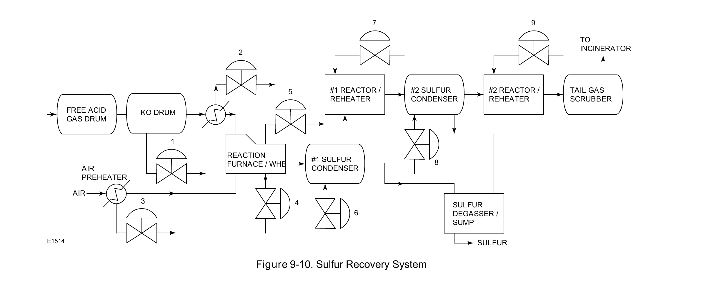

Process-Train Application

Sulfur recovery closes the loop on what amine treatment removed — a real downstream consequence of an upstream process choice, worth tracing rather than treating each stage as independent.
Fisher Control Valve Sourcebook — Oil & Gas (© 2013 Fisher), Chapter 9 "Natural Gas Treatment," Figure 9-10 (drawing number E1514, printed p. 9-12) — "Figure 9-10. Sulfur Recovery System." — used directly. Component Index: ogas-cmp-sulfur-recovery-system.